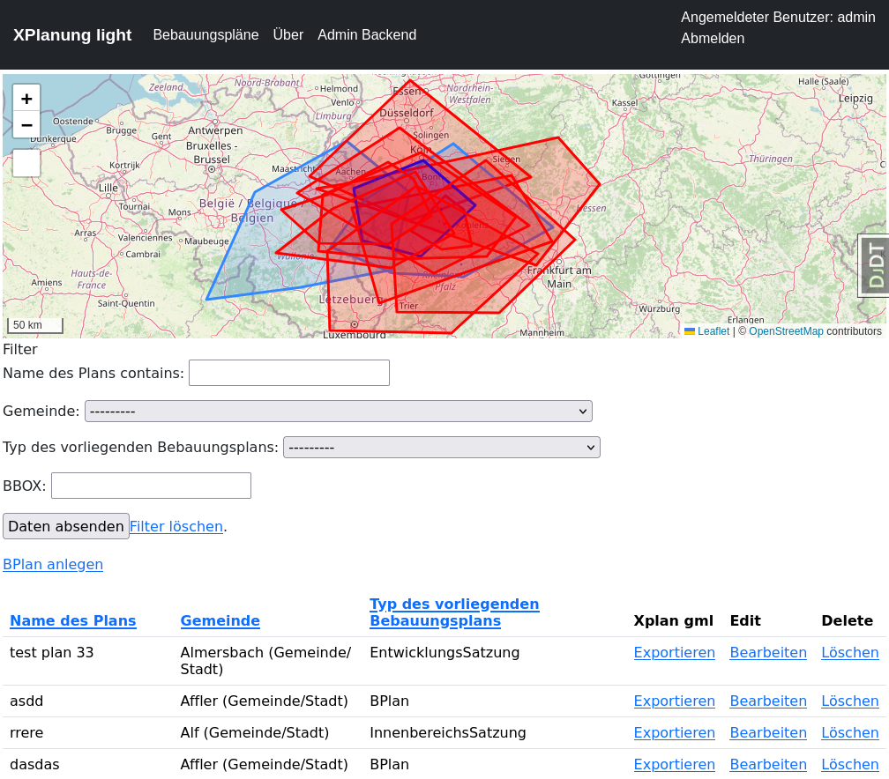
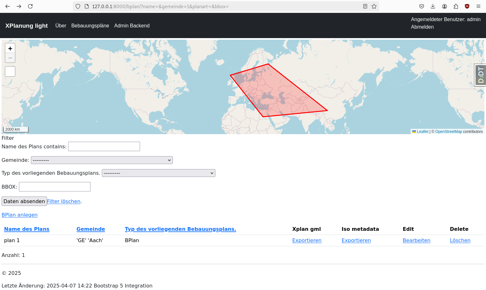
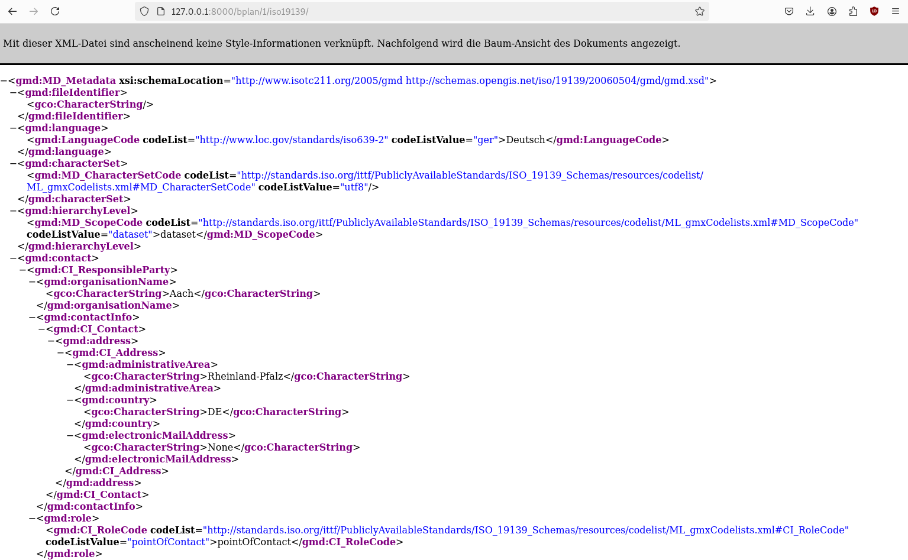

Zusammenfassung
Wir haben innerhalb kürzester Zeit eine sehr einfache Verwaltungssoftware für Bebauungspläne erstellt. Die exportierbaren GML-Dateien lassen sich mit Hilfe des Validators prüfen und sind valide. Einen praktischen Nutzwert hat die Software in diesem Stadium aber noch nicht.
{kind=link}
Metadatenexport
Um zeigen zu können, wie schnell man das System anpassen kann, werden wir schnell noch ISO19193-konforme Metadaten generieren.
Neuer Endpunkt
Den View für XPlan GML können wir einfach beibehalten und später etwas anpassen ;-)
komserv2/xplanung_light/urls.py
urlpatterns = [
# ...
# iso metadata generator for each bplan
path("bplan/<int:pk>/iso19139/", BPlanDetailXmlRasterView.as_view(template_name="xplanung_light/bplan_template_iso19139.xml"), name="bplan-export-iso19139"),
]
Anpassung des Views
Wir brauchen die Geometrien jetzt auch im EPSG:4326 - dazu schreiben wir auch eine kleine Funktion zum Qualifizieren des GMLs aus der DB.
komserv2/xplanung_light/views.py
# ...
from django.urls import reverse_lazy, reverse
# ...
def qualify_gml_geometry(gml_from_db:str):
ET.register_namespace('gml','http://www.opengis.net/gml/3.2')
root = ET.fromstring("<?xml version='1.0' encoding='UTF-8'?><snippet xmlns:gml='http://www.opengis.net/gml/3.2'>" + gml_from_db + "</snippet>")
ns = {
'gml': 'http://www.opengis.net/gml/3.2',
}
# print("<?xml version='1.0' encoding='UTF-8'?><snippet xmlns:gml='http://www.opengis.net/gml/3.2'>" + context['bplan'].geltungsbereich_gml_25832 + "</snippet>")
# Test ob ein Polygon zurück kommt - damit wäre nur ein einziges Polygon im geometry Field
polygons = root.findall('gml:Polygon', ns)
# print(len(polygons))
if len(polygons) == 0:
# print("Kein Polygon auf oberer Ebene gefunden - es sind wahrscheinlich mehrere!")
multi_polygon_element = root.find('gml:MultiSurface', ns)
uuid_multisurface = uuid.uuid4()
multi_polygon_element.set("gml:id", "GML_" + str(uuid_multisurface))
# Füge gml_id Attribute hinzu - besser diese als Hash aus den Geometrien zu rechnen, oder in Zukunft generic_ids der Bereiche zu verwenden
polygons = root.findall('gml:MultiSurface/gml:surfaceMember/gml:Polygon', ns)
for polygon in polygons:
uuid_polygon = uuid.uuid4()
polygon.set("gml:id", "GML_" + str(uuid_polygon))
return ET.tostring(multi_polygon_element, encoding="utf-8", method="xml").decode('utf8')
else:
polygon_element = root.find('gml:Polygon', ns)
#polygon_element.set("xmlns:gml", "http://www.opengis.net/gml/3.2")
uuid_polygon = uuid.uuid4()
polygon_element.set("gml:id", "GML_" + str(uuid_polygon))
# Ausgabe der Geometrie in ein XML-Snippet - erweitert um den MultiSurface/surfaceMember Rahmen
ET.dump(polygon_element)
return '<gml:MultiSurface srsName="EPSG:25832"><gml:surfaceMember>' + ET.tostring(polygon_element, encoding="utf-8", method="xml").decode('utf8') + '</gml:surfaceMember></gml:MultiSurface>'
# ...
class BPlanDetailXmlRasterView(BPlanDetailView):
def get_queryset(self):
# Erweiterung der auszulesenden Objekte um eine transformierte Geomtrie im Format GML 3
queryset = super().get_queryset().annotate(geltungsbereich_gml_25832=AsGML(Transform("geltungsbereich", 25832), version=3)).annotate(geltungsbereich_gml_4326=AsGML("geltungsbereich", version=3))
return queryset
def get_context_data(self, **kwargs):
context = super().get_context_data(**kwargs)
# Um einen XPlanung-konformen Auszug zu bekommen, werden gml_id(s) verwendet.
# Es handelt sich um uuids, die noch das Prefix "GML_" bekommen. Grundsätzlich sollten die
# aus den Daten in der DB stammen und dort vergeben werden.
# Im ersten Schritt synthetisieren wir sie einfach ;-)
context['auszug_uuid'] = "GML_" + str(uuid.uuid4())
context['bplan_uuid'] = "GML_" + str(uuid.uuid4())
# Irgendwie gibt es keine django model function um direkt den Extent der Geometrie zu erhalten. Daher nutzen wir hier gdal
# und Transformieren die Daten erneut im RAM
# Definition der Transformation (Daten sind immer in WGS 84 - 4326)
ct = CoordTransform(SpatialReference(4326, srs_type='epsg'), SpatialReference(25832, srs_type='epsg'))
# OGRGeoemtry Objekt erstellen
ogr_geom = OGRGeometry(str(context['bplan'].geltungsbereich), srs=4326)
context['wgs84_extent'] = ogr_geom.extent
# Transformation nach EPSG:25832
ogr_geom.transform(ct)
# Speichern des Extents in den Context
context['extent'] = ogr_geom.extent
# Ausgabe der GML Variante zu Testzwecken
# print(context['bplan'].geltungsbereich_gml_25832)
# Da die GML Daten nicht alle Attribute beinhalten, die XPlanung fordert, müssen wir sie anpassen, bzw. umschreiben
# Hierzu nutzen wir die Funktion qualify_gml_geometry
context['multisurface_geometry_25832'] = qualify_gml_geometry(context['bplan'].geltungsbereich_gml_25832)
context['multisurface_geometry_4326'] = qualify_gml_geometry(context['bplan'].geltungsbereich_gml_4326)
relative_url = reverse('bplan-export-xplan-raster-6', kwargs={'pk': context['bplan'].id})
context['iso19139_url']= self.request.build_absolute_uri(relative_url)
return context
def dispatch(self, *args, **kwargs):
response = super().dispatch(*args, **kwargs)
response['Content-type'] = "application/xml" # set header
return response
# ...
Erstellen des XML-Templates
komserv2/xplanung_light/templates/xplanung_light/bplan_template_iso19139.xml
<?xml version="1.0" encoding="UTF-8"?>
<gmd:MD_Metadata xmlns:gmd="http://www.isotc211.org/2005/gmd" xmlns:gmx="http://www.isotc211.org/2005/gmx" xmlns:gco="http://www.isotc211.org/2005/gco" xmlns:xsi="http://www.w3.org/2001/XMLSchema-instance" xmlns:gml="http://www.opengis.net/gml" xmlns:xlink="http://www.w3.org/1999/xlink" xsi:schemaLocation="http://www.isotc211.org/2005/gmd http://schemas.opengis.net/iso/19139/20060504/gmd/gmd.xsd">
<gmd:fileIdentifier>
<gco:CharacterString>{{ bplan.generic_id }}</gco:CharacterString>
</gmd:fileIdentifier>
<gmd:language>
<gmd:LanguageCode codeList="http://www.loc.gov/standards/iso639-2" codeListValue="ger">Deutsch</gmd:LanguageCode>
</gmd:language>
<gmd:characterSet>
<gmd:MD_CharacterSetCode codeList="http://standards.iso.org/ittf/PubliclyAvailableStandards/ISO_19139_Schemas/resources/codelist/ML_gmxCodelists.xml#MD_CharacterSetCode" codeListValue="utf8"/>
</gmd:characterSet>
<gmd:hierarchyLevel>
<gmd:MD_ScopeCode codeList="http://standards.iso.org/ittf/PubliclyAvailableStandards/ISO_19139_Schemas/resources/codelist/ML_gmxCodelists.xml#MD_ScopeCode" codeListValue="dataset">dataset</gmd:MD_ScopeCode>
</gmd:hierarchyLevel>
<gmd:contact>
<gmd:CI_ResponsibleParty>
<gmd:organisationName>
<gco:CharacterString>{{ bplan.gemeinde.name }}</gco:CharacterString>
</gmd:organisationName>
<gmd:contactInfo>
<gmd:CI_Contact>
<gmd:address>
<gmd:CI_Address>
<gmd:administrativeArea>
<gco:CharacterString>Rheinland-Pfalz</gco:CharacterString>
</gmd:administrativeArea>
<gmd:country>
<gco:CharacterString>DE</gco:CharacterString>
</gmd:country>
<gmd:electronicMailAddress>
<gco:CharacterString>{{ bplan.gemeinde.address_email }}</gco:CharacterString>
</gmd:electronicMailAddress>
</gmd:CI_Address>
</gmd:address>
</gmd:CI_Contact>
</gmd:contactInfo>
<gmd:role>
<gmd:CI_RoleCode codeList="http://standards.iso.org/ittf/PubliclyAvailableStandards/ISO_19139_Schemas/resources/codelist/ML_gmxCodelists.xml#CI_RoleCode" codeListValue="pointOfContact">pointOfContact</gmd:CI_RoleCode>
</gmd:role>
</gmd:CI_ResponsibleParty>
</gmd:contact>
<gmd:dateStamp>
{% if bplan.history.date %}
<gco:Date>{{ bplan.history.date }}</gco:Date>
{% else %}
<gco:Date>2025-05-07</gco:Date>
{% endif %}
</gmd:dateStamp>
<gmd:metadataStandardName>
<gco:CharacterString>ISO19115</gco:CharacterString>
</gmd:metadataStandardName>
<gmd:metadataStandardVersion>
<gco:CharacterString>2003/Cor.1:2006</gco:CharacterString>
</gmd:metadataStandardVersion>
<gmd:referenceSystemInfo>
<gmd:MD_ReferenceSystem>
<gmd:referenceSystemIdentifier>
<gmd:RS_Identifier>
<gmd:authority>
<gmd:CI_Citation>
<gmd:title>
<gco:CharacterString>European Petroleum Survey Group (EPSG) Geodetic Parameter Registry</gco:CharacterString>
</gmd:title>
<gmd:date>
<gmd:CI_Date>
<gmd:date>
<gco:Date>2008-11-12</gco:Date>
</gmd:date>
<gmd:dateType>
<gmd:CI_DateTypeCode codeList="http://www.isotc211.org/2005/resources/codelist/gmxCodelists.xml#CI_DateTypeCode" codeListValue="publication">publication</gmd:CI_DateTypeCode>
</gmd:dateType>
</gmd:CI_Date>
</gmd:date>
<gmd:citedResponsibleParty>
<gmd:CI_ResponsibleParty>
<gmd:organisationName>
<gco:CharacterString>European Petroleum Survey Group</gco:CharacterString>
</gmd:organisationName>
<gmd:contactInfo>
<gmd:CI_Contact>
<gmd:onlineResource>
<gmd:CI_OnlineResource>
<gmd:linkage>
<gmd:URL>http://www.epsg-registry.org/</gmd:URL>
</gmd:linkage>
</gmd:CI_OnlineResource>
</gmd:onlineResource>
</gmd:CI_Contact>
</gmd:contactInfo>
<gmd:role gco:nilReason="missing"/>
</gmd:CI_ResponsibleParty>
</gmd:citedResponsibleParty>
</gmd:CI_Citation>
</gmd:authority>
<gmd:code>
<gco:CharacterString>http://www.opengis.net/def/crs/EPSG/0/4326</gco:CharacterString>
</gmd:code>
<gmd:version>
<gco:CharacterString>6.18.3</gco:CharacterString>
</gmd:version>
</gmd:RS_Identifier>
</gmd:referenceSystemIdentifier>
</gmd:MD_ReferenceSystem>
</gmd:referenceSystemInfo>
<gmd:identificationInfo>
<gmd:MD_DataIdentification>
<gmd:citation>
<gmd:CI_Citation>
<gmd:title>
<gco:CharacterString>Bebauungsplan {{ bplan.name }} von {{ bplan.gemeinde.name }}</gco:CharacterString>
</gmd:title>
<gmd:date>
<gmd:CI_Date>
<gmd:date>
{% if bplan.history.date %}
<gco:Date>{{ bplan.history.date }}</gco:Date>
{% else %}
<gco:Date>2025-05-07</gco:Date>
{% endif %}
</gmd:date>
<gmd:dateType>
<gmd:CI_DateTypeCode codeList="http://standards.iso.org/ittf/PubliclyAvailableStandards/ISO_19139_Schemas/resources/codelist/ML_gmxCodelists.xml#CI_DateTypeCode" codeListValue="revision">revision</gmd:CI_DateTypeCode>
</gmd:dateType>
</gmd:CI_Date>
</gmd:date>
<gmd:identifier>
<gmd:MD_Identifier>
<gmd:code>
<gco:CharacterString>https://komserv4gdi.service24.rlp.de/{{ bplan.generic_id }}</gco:CharacterString>
</gmd:code>
</gmd:MD_Identifier>
</gmd:identifier>
</gmd:CI_Citation>
</gmd:citation>
<gmd:abstract>
<gco:CharacterString>Bebauungsplan {{ bplan.name }} von {{ bplan.gemeinde.name }}</gco:CharacterString>
</gmd:abstract>
<gmd:pointOfContact>
<gmd:CI_ResponsibleParty>
<gmd:organisationName>
<gco:CharacterString>{{ bplan.gemeinde.address_street }}</gco:CharacterString>
</gmd:organisationName>
<gmd:contactInfo>
<gmd:CI_Contact>
<gmd:address>
<gmd:CI_Address>
<gmd:administrativeArea>
<gco:CharacterString>Rheinland-Pfalz</gco:CharacterString>
</gmd:administrativeArea>
<gmd:country>
<gco:CharacterString>DE</gco:CharacterString>
</gmd:country>
<gmd:electronicMailAddress>
<gco:CharacterString>{{ bplan.gemeinde.address_email }}</gco:CharacterString>
</gmd:electronicMailAddress>
</gmd:CI_Address>
</gmd:address>
</gmd:CI_Contact>
</gmd:contactInfo>
<gmd:role>
<gmd:CI_RoleCode codeList="http://standards.iso.org/ittf/PubliclyAvailableStandards/ISO_19139_Schemas/resources/codelist/ML_gmxCodelists.xml#CI_RoleCode" codeListValue="publisher">publisher</gmd:CI_RoleCode>
</gmd:role>
</gmd:CI_ResponsibleParty>
</gmd:pointOfContact>
<gmd:resourceMaintenance>
<gmd:MD_MaintenanceInformation>
<gmd:maintenanceAndUpdateFrequency>
<gmd:MD_MaintenanceFrequencyCode codeListValue="irregular" codeList="http://www.isotc211.org/2005/resources/codeList.xml#MD_MaintenanceFrequencyCode"/>
</gmd:maintenanceAndUpdateFrequency>
</gmd:MD_MaintenanceInformation>
</gmd:resourceMaintenance>
<gmd:descriptiveKeywords>
<gmd:MD_Keywords>
<gmd:keyword>
<gco:CharacterString>Regional</gco:CharacterString>
</gmd:keyword>
<gmd:thesaurusName>
<gmd:CI_Citation>
<gmd:title>
<gco:CharacterString>Spatial scope</gco:CharacterString>
</gmd:title>
<gmd:date>
<gmd:CI_Date>
<gmd:date>
<gco:Date>2019-05-22</gco:Date>
</gmd:date>
<gmd:dateType>
<gmd:CI_DateTypeCode codeList="http://standards.iso.org/ittf/PubliclyAvailableStandards/ISO_19139_Schemas/resources/codelist/ML_gmxCodelists.xml#CI_DateTypeCode" codeListValue="publication">publication</gmd:CI_DateTypeCode>
</gmd:dateType>
</gmd:CI_Date>
</gmd:date>
</gmd:CI_Citation>
</gmd:thesaurusName>
</gmd:MD_Keywords>
</gmd:descriptiveKeywords>
<gmd:resourceConstraints>
<!-- TODO: pull license information from user defined license information -->
<gmd:MD_LegalConstraints>
<gmd:accessConstraints>
<gmd:MD_RestrictionCode codeList="http://standards.iso.org/iso/19139/resources/gmxCodelists.xml#MD_RestrictionCode" codeListValue="otherRestrictions"/>
</gmd:accessConstraints>
<gmd:otherConstraints>
<gmx:Anchor xlink:href="http://inspire.ec.europa.eu/metadata-codelist/LimitationsOnPublicAccess/noLimitations">Es gelten keine Zugriffsbeschränkungen</gmx:Anchor>
</gmd:otherConstraints>
</gmd:MD_LegalConstraints>
</gmd:resourceConstraints>
<gmd:resourceConstraints>
<gmd:MD_LegalConstraints>
<gmd:useConstraints>
<gmd:MD_RestrictionCode codeList="http://standards.iso.org/iso/19139/resources/gmxCodelists.xml#MD_RestrictionCode" codeListValue="otherRestrictions"/>
</gmd:useConstraints>
<gmd:otherConstraints>
<gco:CharacterString>
Lizenz: cc-by-3.0 - Creative Commons: Namensnennung 3.0 Deutschland - http://creativecommons.org/licenses/by/3.0/de/ - Quellenvermerk: Source note required by license, but not given!
</gco:CharacterString>
</gmd:otherConstraints>
<gmd:otherConstraints>
<gco:CharacterString>
{"id":"cc-by-3.0","name":"Creative Commons: Namensnennung 3.0 Deutschland","url":"http:\/\/creativecommons.org\/licenses\/by\/3.0\/de\/","quelle":"Source note required by license, but not given!"}
</gco:CharacterString>
</gmd:otherConstraints>
</gmd:MD_LegalConstraints>
</gmd:resourceConstraints>
<gmd:spatialRepresentationType>
<gmd:MD_SpatialRepresentationTypeCode codeList="https://standards.iso.org/iso/19139/resources/gmxCodelists.xml#MD_SpatialRepresentationTypeCode" codeListValue="vector">vector</gmd:MD_SpatialRepresentationTypeCode>
</gmd:spatialRepresentationType>
<gmd:spatialResolution>
<gmd:MD_Resolution>
<gmd:equivalentScale>
<gmd:MD_RepresentativeFraction>
<gmd:denominator>
<gco:Integer>1000</gco:Integer>
</gmd:denominator>
</gmd:MD_RepresentativeFraction>
</gmd:equivalentScale>
</gmd:MD_Resolution>
</gmd:spatialResolution>
<gmd:language>
<gmd:LanguageCode codeListValue="ger" codeList="http://www.loc.gov/standards/iso639-2">Deutsch</gmd:LanguageCode>
</gmd:language>
<gmd:characterSet>
<gmd:MD_CharacterSetCode codeListValue="utf8" codeList="http://www.isotc211.org/2005/resources/codeList.xml#MD_CharacterSetCode"/>
</gmd:characterSet>
<gmd:topicCategory>
<gmd:MD_TopicCategoryCode>location</gmd:MD_TopicCategoryCode>
</gmd:topicCategory>
<gmd:extent>
<gmd:EX_Extent>
<gmd:geographicElement>
<gmd:EX_GeographicBoundingBox>
<gmd:westBoundLongitude>
<gco:Decimal>{{ wgs84_extent.0 }}</gco:Decimal>
</gmd:westBoundLongitude>
<gmd:eastBoundLongitude>
<gco:Decimal>{{ wgs84_extent.1 }}</gco:Decimal>
</gmd:eastBoundLongitude>
<gmd:southBoundLatitude>
<gco:Decimal>{{ wgs84_extent.2 }}</gco:Decimal>
</gmd:southBoundLatitude>
<gmd:northBoundLatitude>
<gco:Decimal>{{ wgs84_extent.3 }}</gco:Decimal>
</gmd:northBoundLatitude>
</gmd:EX_GeographicBoundingBox>
</gmd:geographicElement>
</gmd:EX_Extent>
</gmd:extent>
{% if multisurface_geometry_4326 %}
<gmd:extent>
<gmd:EX_Extent>
<gmd:geographicElement>
<gmd:EX_BoundingPolygon>
<gmd:polygon>
{% autoescape off %}
{{ multisurface_geometry_4326 }}
{% endautoescape %}
</gmd:polygon>
</gmd:EX_BoundingPolygon>
</gmd:geographicElement>
</gmd:EX_Extent>
</gmd:extent>
{% endif %}
<!--<gmd:extent>
<gmd:EX_Extent>
<gmd:temporalElement>
<gmd:EX_TemporalExtent>
<gmd:extent>
<gml:TimePeriod gml:id="temporalextent">
<gml:beginPosition>2024-11-08</gml:beginPosition>
<gml:endPosition>2024-11-09</gml:endPosition>
</gml:TimePeriod>
</gmd:extent>
</gmd:EX_TemporalExtent>
</gmd:temporalElement>
</gmd:EX_Extent>
</gmd:extent>-->
</gmd:MD_DataIdentification>
</gmd:identificationInfo>
<gmd:distributionInfo>
<gmd:MD_Distribution>
<gmd:distributionFormat>
<gmd:MD_Format>
<gmd:name>
<gco:CharacterString>GML</gco:CharacterString>
</gmd:name>
<gmd:version>
<gco:CharacterString>3.2</gco:CharacterString>
</gmd:version>
</gmd:MD_Format>
</gmd:distributionFormat>
<gmd:distributor>
<gmd:MD_Distributor>
<gmd:distributorContact>
<gmd:CI_ResponsibleParty>
<gmd:organisationName>
{% if responsible_party_address %}
<gco:CharacterString>{{ responsible_party_address }}</gco:CharacterString>
{% else %}
<gco:CharacterString>Musterstraße 10</gco:CharacterString>
{% endif %}
</gmd:organisationName>
<gmd:contactInfo>
<gmd:CI_Contact>
<gmd:address>
<gmd:CI_Address>
<gmd:administrativeArea>
<gco:CharacterString>Rheinland-Pfalz</gco:CharacterString>
</gmd:administrativeArea>
<gmd:country>
<gco:CharacterString>DE</gco:CharacterString>
</gmd:country>
<gmd:electronicMailAddress>
{% if responsible_party_email %}
<gco:CharacterString>{{ responsible_party_email }}</gco:CharacterString>
{% else %}
<gco:CharacterString>test@example.com</gco:CharacterString>
{% endif %}
</gmd:electronicMailAddress>
</gmd:CI_Address>
</gmd:address>
</gmd:CI_Contact>
</gmd:contactInfo>
<gmd:role>
<gmd:CI_RoleCode codeList="http://standards.iso.org/ittf/PubliclyAvailableStandards/ISO_19139_Schemas/resources/codelist/ML_gmxCodelists.xml#CI_RoleCode" codeListValue="pointOfContact">pointOfContact</gmd:CI_RoleCode>
</gmd:role>
</gmd:CI_ResponsibleParty>
</gmd:distributorContact>
</gmd:MD_Distributor>
</gmd:distributor>
<gmd:transferOptions>
<gmd:MD_DigitalTransferOptions>
<gmd:onLine>
<gmd:CI_OnlineResource>
<gmd:linkage>
<gmd:URL>{{ iso19139_url }}</gmd:URL>
</gmd:linkage>
<gmd:function>
<gmd:CI_OnLineFunctionCode codeList="http://www.isotc211.org/2005/resources/Codelist/gmxCodelists.xml" codeListValue="download">download</gmd:CI_OnLineFunctionCode>
</gmd:function>
</gmd:CI_OnlineResource>
</gmd:onLine>
</gmd:MD_DigitalTransferOptions>
</gmd:transferOptions>
</gmd:MD_Distribution>
</gmd:distributionInfo>
<gmd:dataQualityInfo>
<!-- Fix -->
<gmd:DQ_DataQuality>
<gmd:scope>
<gmd:DQ_Scope>
<gmd:level>
<gmd:MD_ScopeCode codeList="http://standards.iso.org/ittf/PubliclyAvailableStandards/ISO_19139_Schemas/resources/codelist/ML_gmxCodelists.xml#MD_ScopeCode" codeListValue="dataset">dataset</gmd:MD_ScopeCode>
</gmd:level>
</gmd:DQ_Scope>
</gmd:scope>
<gmd:report xmlns:gmd="http://www.isotc211.org/2005/gmd" xmlns:xsi="http://www.w3.org/2001/XMLSchema-instance" xmlns:gco="http://www.isotc211.org/2005/gco">
<gmd:DQ_DomainConsistency xsi:type="gmd:DQ_DomainConsistency_Type">
<gmd:result>
<gmd:DQ_ConformanceResult xsi:type="gmd:DQ_ConformanceResult_Type">
<gmd:specification>
<gmd:CI_Citation>
<gmd:title>
<gco:CharacterString>VERORDNUNG (EG) Nr. 1205/2008 DER KOMMISSION vom 3. Dezember 2008 zur Durchführung der Richtlinie 2007/2/EG des Europäischen Parlaments und des Rates hinsichtlich Metadaten</gco:CharacterString>
</gmd:title>
<gmd:date>
<gmd:CI_Date>
<gmd:date>
<gco:Date>2008-12-04</gco:Date>
</gmd:date>
<gmd:dateType>
<gmd:CI_DateTypeCode codeList="http://standards.iso.org/ittf/PubliclyAvailableStandards/ISO_19139_Schemas/resources/Codelist/ML_gmxCodelists.xml#CI_DateTypeCode" codeListValue="publication">publication</gmd:CI_DateTypeCode>
</gmd:dateType>
</gmd:CI_Date>
</gmd:date>
<gmd:edition>
<gco:CharacterString>1.0</gco:CharacterString>
</gmd:edition>
</gmd:CI_Citation>
</gmd:specification>
<gmd:explanation>
<gco:CharacterString>No explanation available</gco:CharacterString>
</gmd:explanation>
<gmd:pass>
<gco:Boolean>true</gco:Boolean>
</gmd:pass>
</gmd:DQ_ConformanceResult>
</gmd:result>
</gmd:DQ_DomainConsistency>
</gmd:report>
<gmd:report xmlns:gmd="http://www.isotc211.org/2005/gmd" xmlns:xsi="http://www.w3.org/2001/XMLSchema-instance" xmlns:gco="http://www.isotc211.org/2005/gco">
<gmd:DQ_DomainConsistency xsi:type="gmd:DQ_DomainConsistency_Type">
<gmd:result>
<gmd:DQ_ConformanceResult xsi:type="gmd:DQ_ConformanceResult_Type">
<gmd:specification>
<gmd:CI_Citation>
<gmd:title>
<gco:CharacterString>VERORDNUNG (EU) Nr. 1253/2013 DER KOMMISSION vom 21. Oktober 2013 zur Änderung der Verordnung (EU) Nr. 1089/2010 zur Durchführung der Richtlinie 2007/2/EG hinsichtlich der Interoperabilität von Geodatensätzen und -diensten</gco:CharacterString>
</gmd:title>
<gmd:date>
<gmd:CI_Date>
<gmd:date>
<gco:Date>2013-12-10</gco:Date>
</gmd:date>
<gmd:dateType>
<gmd:CI_DateTypeCode codeList="http://standards.iso.org/ittf/PubliclyAvailableStandards/ISO_19139_Schemas/resources/Codelist/ML_gmxCodelists.xml#CI_DateTypeCode" codeListValue="publication">publication</gmd:CI_DateTypeCode>
</gmd:dateType>
</gmd:CI_Date>
</gmd:date>
<gmd:edition>
<gco:CharacterString>1.0</gco:CharacterString>
</gmd:edition>
</gmd:CI_Citation>
</gmd:specification>
<gmd:explanation>
<gco:CharacterString>No explanation available</gco:CharacterString>
</gmd:explanation>
<gmd:pass>
<gco:Boolean>false</gco:Boolean>
</gmd:pass>
</gmd:DQ_ConformanceResult>
</gmd:result>
</gmd:DQ_DomainConsistency>
</gmd:report>
<gmd:report xmlns:gmd="http://www.isotc211.org/2005/gmd" xmlns:xsi="http://www.w3.org/2001/XMLSchema-instance" xmlns:gco="http://www.isotc211.org/2005/gco">
<gmd:DQ_DomainConsistency xsi:type="gmd:DQ_DomainConsistency_Type">
<gmd:result>
<gmd:DQ_ConformanceResult xsi:type="gmd:DQ_ConformanceResult_Type">
<gmd:specification>
<gmd:CI_Citation>
<gmd:title>
<gco:CharacterString>VERORDNUNG (EU) Nr. 102/2011 DER KOMMISSION vom 4. Februar 2011 zur Änderung der Verordnung (EU) Nr. 1089/2010 zur Durchführung der Richtlinie 2007/2/EG des Europäischen Parlaments und des Rates hinsichtlich der Interoperabilität von Geodatensätzen und -diensten</gco:CharacterString>
</gmd:title>
<gmd:date>
<gmd:CI_Date>
<gmd:date>
<gco:Date>2011-02-05</gco:Date>
</gmd:date>
<gmd:dateType>
<gmd:CI_DateTypeCode codeList="http://standards.iso.org/ittf/PubliclyAvailableStandards/ISO_19139_Schemas/resources/Codelist/ML_gmxCodelists.xml#CI_DateTypeCode" codeListValue="publication">publication</gmd:CI_DateTypeCode>
</gmd:dateType>
</gmd:CI_Date>
</gmd:date>
<gmd:edition>
<gco:CharacterString>1.0</gco:CharacterString>
</gmd:edition>
</gmd:CI_Citation>
</gmd:specification>
<gmd:explanation>
<gco:CharacterString>No explanation available</gco:CharacterString>
</gmd:explanation>
<gmd:pass>
<gco:Boolean>false</gco:Boolean>
</gmd:pass>
</gmd:DQ_ConformanceResult>
</gmd:result>
</gmd:DQ_DomainConsistency>
</gmd:report>
<gmd:report xmlns:gmd="http://www.isotc211.org/2005/gmd" xmlns:xsi="http://www.w3.org/2001/XMLSchema-instance" xmlns:gco="http://www.isotc211.org/2005/gco">
<gmd:DQ_DomainConsistency xsi:type="gmd:DQ_DomainConsistency_Type">
<gmd:result>
<gmd:DQ_ConformanceResult xsi:type="gmd:DQ_ConformanceResult_Type">
<gmd:specification>
<gmd:CI_Citation>
<gmd:title>
<gco:CharacterString>VERORDNUNG (EG) Nr. 1089/2010 DER KOMMISSION vom 23. November 2010 zur Durchführung der Richtlinie 2007/2/EG des Europäischen Parlaments und des Rates hinsichtlich der Interoperabilität von Geodatensätzen und -diensten</gco:CharacterString>
</gmd:title>
<gmd:date>
<gmd:CI_Date>
<gmd:date>
<gco:Date>2010-12-08</gco:Date>
</gmd:date>
<gmd:dateType>
<gmd:CI_DateTypeCode codeList="http://standards.iso.org/ittf/PubliclyAvailableStandards/ISO_19139_Schemas/resources/Codelist/ML_gmxCodelists.xml#CI_DateTypeCode" codeListValue="publication">publication</gmd:CI_DateTypeCode>
</gmd:dateType>
</gmd:CI_Date>
</gmd:date>
<gmd:edition>
<gco:CharacterString>1.0</gco:CharacterString>
</gmd:edition>
</gmd:CI_Citation>
</gmd:specification>
<gmd:explanation>
<gco:CharacterString>No explanation available</gco:CharacterString>
</gmd:explanation>
<gmd:pass>
<gco:Boolean>false</gco:Boolean>
</gmd:pass>
</gmd:DQ_ConformanceResult>
</gmd:result>
</gmd:DQ_DomainConsistency>
</gmd:report>
<gmd:lineage>
<gmd:LI_Lineage>
<gmd:statement>
<gco:CharacterString>Geodaten basieren auf den generalisierten amtlichen Grenzen der Gebietskörperschaften.</gco:CharacterString>
</gmd:statement>
</gmd:LI_Lineage>
</gmd:lineage>
</gmd:DQ_DataQuality>
</gmd:dataQualityInfo>
</gmd:MD_Metadata>
Anpassung der Tabelle
komserv2/xplanung_light/tables.py
import django_tables2 as tables
from .models import BPlan
from django_tables2 import Column
from django_tables2.utils import A
class BPlanTable(tables.Table):
#download = tables.LinkColumn('gedis-document-pdf', text='Download', args=[A('pk')], \
# orderable=False, empty_values=())
xplan_gml = tables.LinkColumn('bplan-export-xplan-raster-6', text='Exportieren', args=[A('pk')], \
orderable=False, empty_values=())
iso_metadata = tables.LinkColumn('bplan-export-iso19139', text='Exportieren', args=[A('pk')], \
orderable=False, empty_values=())
edit = tables.LinkColumn('bplan-update', text='Bearbeiten', args=[A('pk')], \
orderable=False, empty_values=())
delete = tables.LinkColumn('bplan-delete', text='Löschen', args=[A('pk')], \
orderable=False, empty_values=())
"""
geojson = Column(
accessor=A('geojson'),
orderable=False,
# ...
)
"""
class Meta:
model = BPlan
template_name = "django_tables2/bootstrap5.html"
fields = ("name", "gemeinde", "planart", "xplan_gml", "iso_metadata", "edit", "delete")
Ergebnis des ISO-Metadaten Exports
Die Bebauungsplantabelle hat jetzt eine Spalte mit dem jeweiligen Link zu einem konformen ISO-19139 dataset Metadatensatz. Den können wir später verwenden um die Serverkomponenten damit anzureichen - GDI very easy ;-) .
Neue Spalte für Export in Tabelle
{kind=link}
ISO19139 Export
http://127.0.0.1:8000/bplan/1/iso19139/
{kind=link}
TODOs
Um die Software zur Produktionsreife zu bringen, müssen noch ein paar Dinge entwickelt werden.
Ersetzen des Felds geltungsbereich durch eine m2m Relation zu einem neuen Modell bereich
Aktivieren der Pflichtfelder entprechend der Vorgaben in RLP
Entwickeln notwendiger Validierungsfunktionen
Erstellung eines Mapfile-Generators zur Publikation von WMS- und WFS-Interfaces
Schaffung der Ablagemöglichkeit für Dokumente
Importmöglichkeit für BPlan-GML Dokumente
…
Bemerkung
Auf geht’s ;-) …